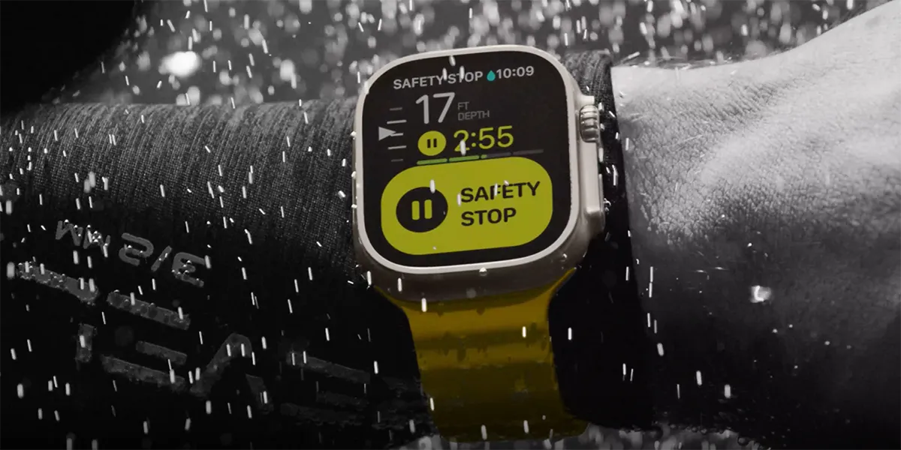

Сапфировое стекло Apple Watch Ultra оказалось не таким прочным, как должно быть — у Garmin Fenix 7 покрытие лучше
Несколько месяцев назад Apple представила защищенные смарт-часы Apple Watch Ultra с титановым корпусом и сапфировым стеклом. Известный блогер JerryRigEverything решил протестировать это стекло, заодно сравнив часы Apple с конкурентами в лице Samsung Galaxy Watch 5 и Garmin Fenix 7.
Далее